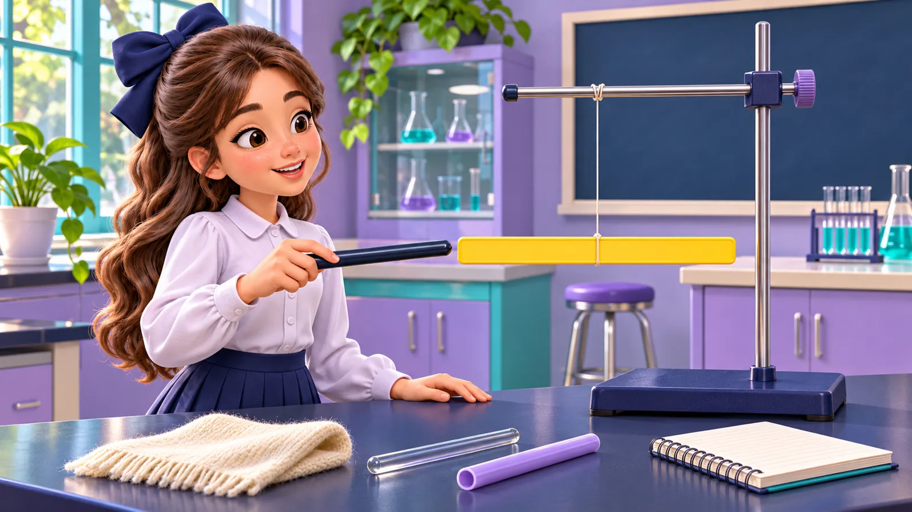

⚡ مغامرة الشحنات
أنتِ فيزيائية في مهمة لكشف أسرار الشحنات! لكل مرحلة 10 أسئلة، و25 ثانية لكل سؤال، و3 قلوب ❤. الإجابات المتتالية الصحيحة تمنحكِ نقاطًا إضافية ⚡.

أنتِ فيزيائية في مهمة لكشف أسرار الشحنات! لكل مرحلة 10 أسئلة، و25 ثانية لكل سؤال، و3 قلوب ❤. الإجابات المتتالية الصحيحة تمنحكِ نقاطًا إضافية ⚡.